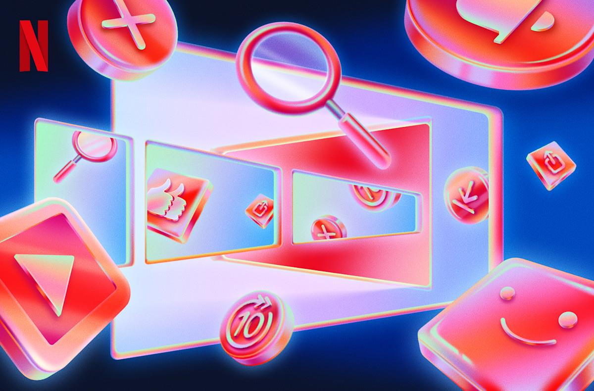

La empresa
Ficha, directivos, áreas y presencia en el mundo.
Entrar
Por correo · 2–3 días Streaming · 10–15 s
De sobres rojos por correo a más de 190 países en segundos.
¿Cómo cambió el negocio al pasar del alquiler de DVD por correo al streaming?
Fig. 3. Sobres rojos de los DVD. Fuente: Netflix, Thanks for Watching (2023). Fig. 8. Acciones del streaming. Fuente: Netflix (2012).
Primera tienda online de alquiler de DVD.
Países con Netflix desde 2016.
Suscripciones de pago (4.º trim. 2025).
Ingresos en 2025, +16 % que en 2024.